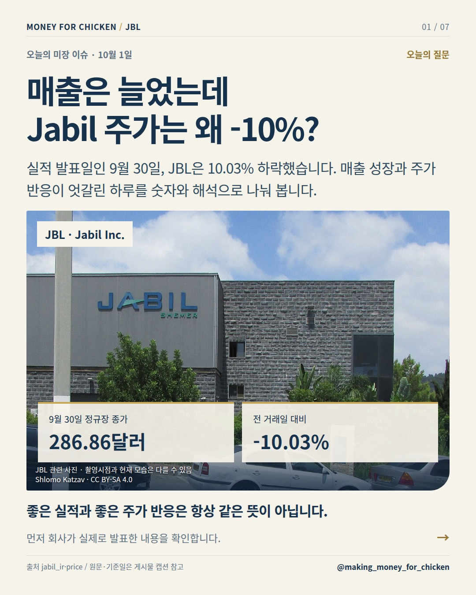
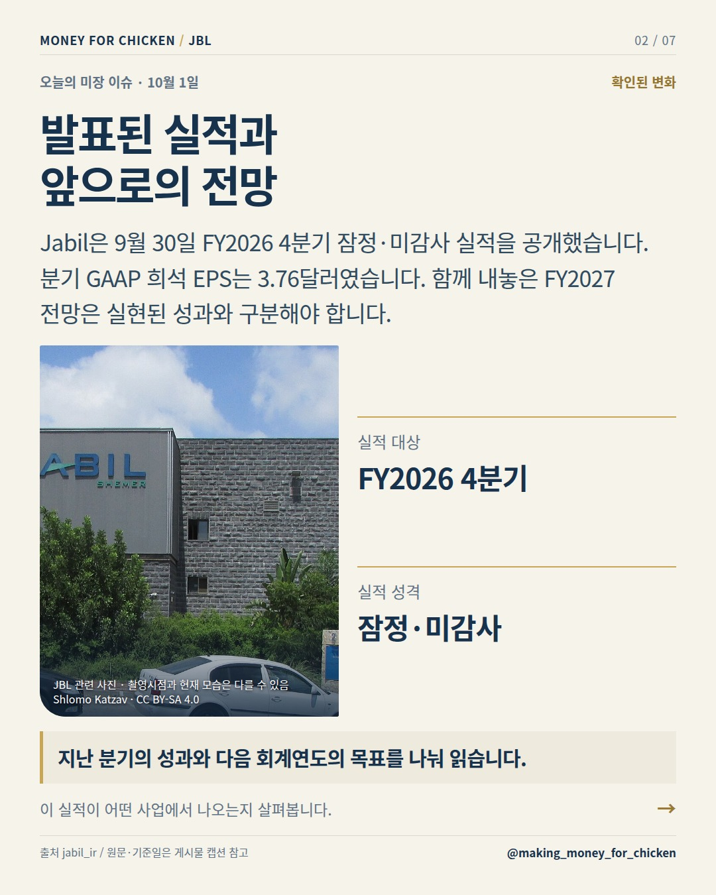
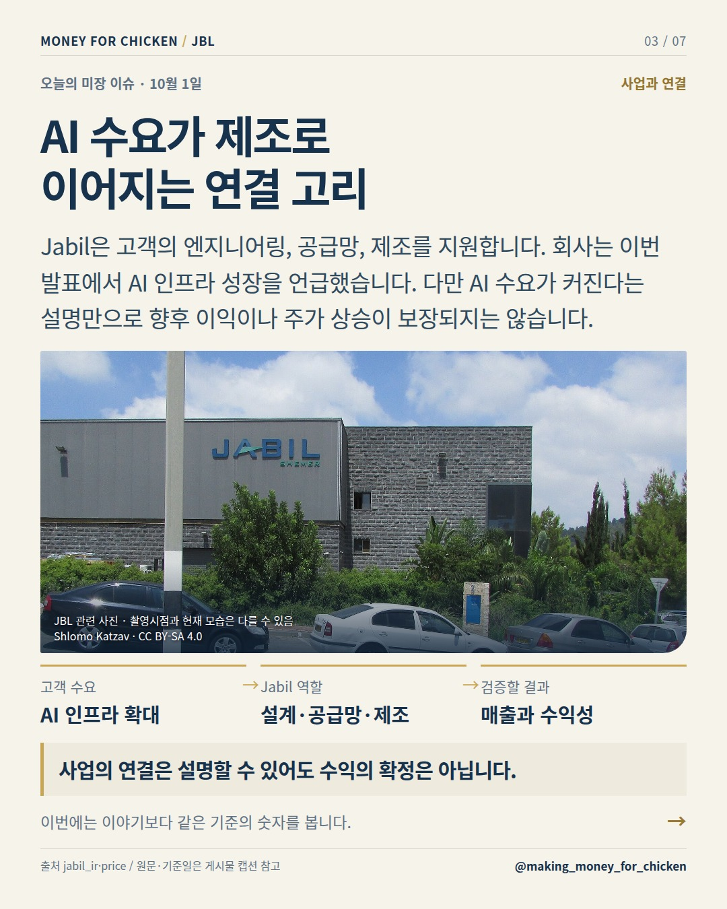
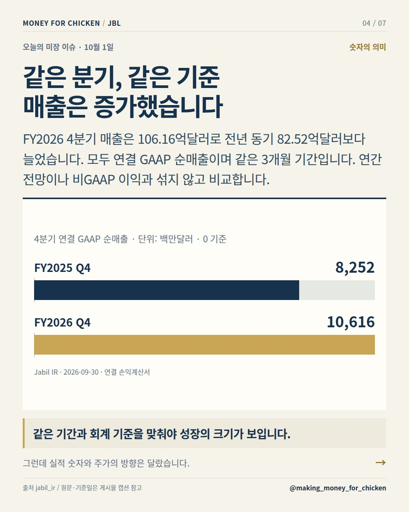
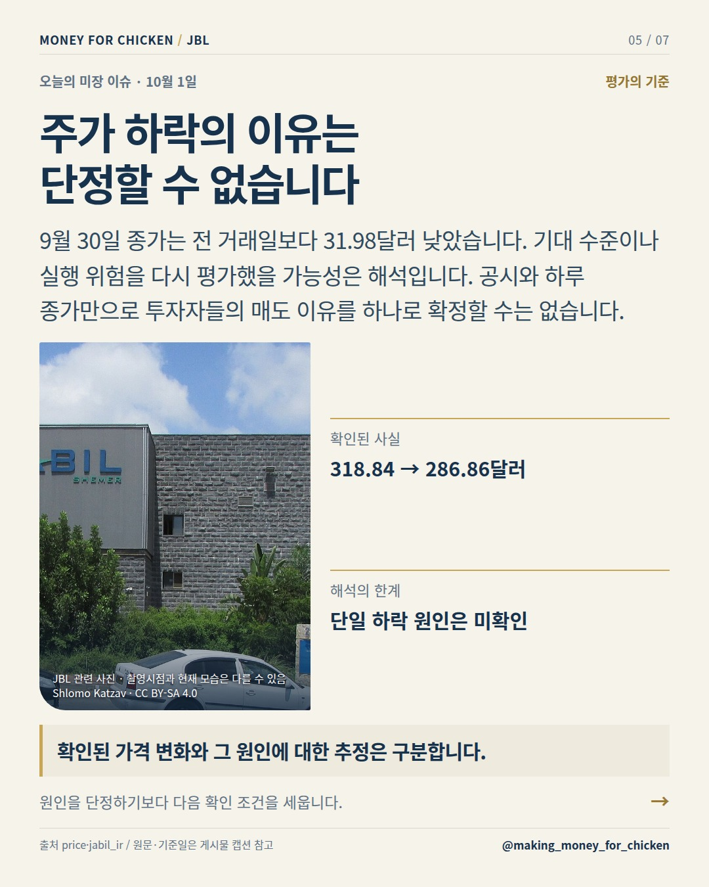
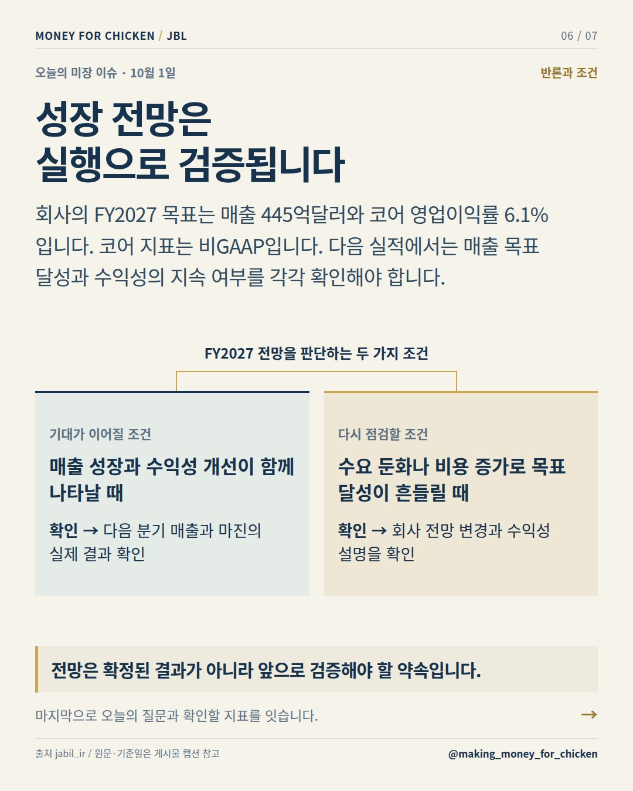
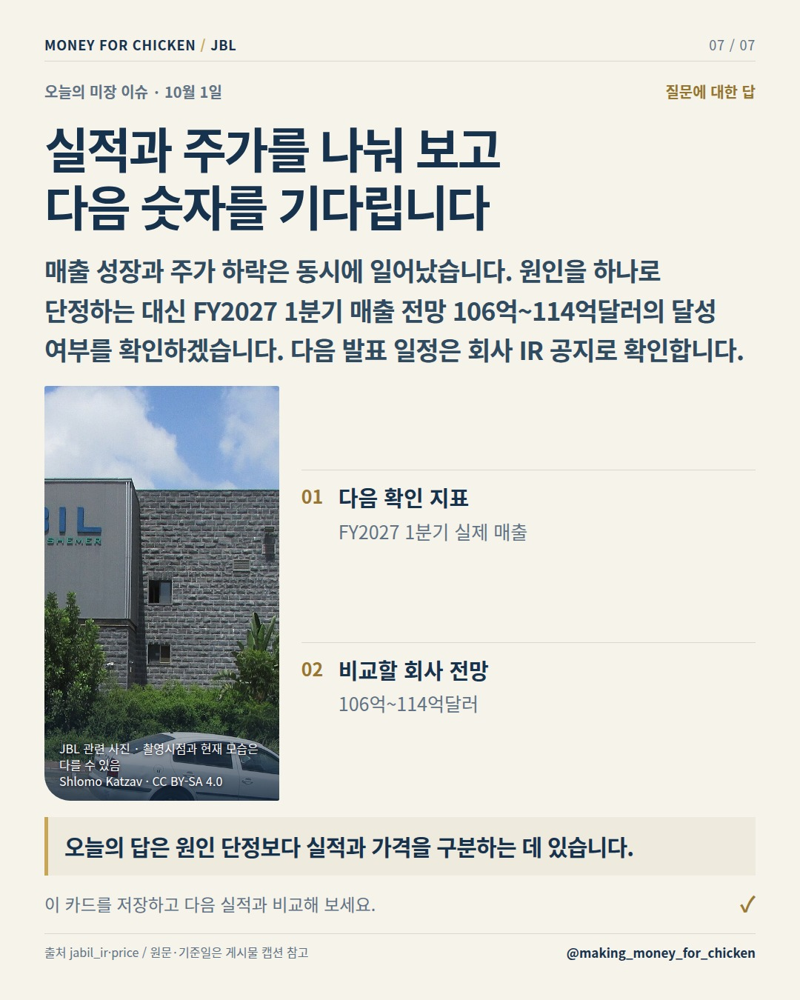

01 / 07
매출은 늘었는데 Jabil 주가는 왜 -10%?

실적 발표일인 9월 30일, JBL은 10.03% 하락했습니다. 매출 성장과 주가 반응이 엇갈린 하루를 숫자와 해석으로 나눠 봅니다.
좋은 실적과 좋은 주가 반응은 항상 같은 뜻이 아닙니다.
먼저 회사가 실제로 발표한 내용을 확인합니다.
오늘의 미장 이슈 · 10월 1일
Jabil의 실적 성장과 당일 주가 하락은 동시에 확인됩니다. 다만 공시와 종가만으로 하락 원인을 특정할 수는 없습니다. 실적, 회사 전망, 시장의 가격 평가를 구분해 읽어야 합니다.
01 / 07

실적 발표일인 9월 30일, JBL은 10.03% 하락했습니다. 매출 성장과 주가 반응이 엇갈린 하루를 숫자와 해석으로 나눠 봅니다.
좋은 실적과 좋은 주가 반응은 항상 같은 뜻이 아닙니다.
먼저 회사가 실제로 발표한 내용을 확인합니다.
02 / 07

Jabil은 9월 30일 FY2026 4분기 잠정·미감사 실적을 공개했습니다. 분기 GAAP 희석 EPS는 3.76달러였습니다. 함께 내놓은 FY2027 전망은 실현된 성과와 구분해야 합니다.
지난 분기의 성과와 다음 회계연도의 목표를 나눠 읽습니다.
이 실적이 어떤 사업에서 나오는지 살펴봅니다.
03 / 07

Jabil은 고객의 엔지니어링, 공급망, 제조를 지원합니다. 회사는 이번 발표에서 AI 인프라 성장을 언급했습니다. 다만 AI 수요가 커진다는 설명만으로 향후 이익이나 주가 상승이 보장되지는 않습니다.
사업의 연결은 설명할 수 있어도 수익의 확정은 아닙니다.
이번에는 이야기보다 같은 기준의 숫자를 봅니다.
04 / 07

FY2026 4분기 매출은 106.16억달러로 전년 동기 82.52억달러보다 늘었습니다. 모두 연결 GAAP 순매출이며 같은 3개월 기간입니다. 연간 전망이나 비GAAP 이익과 섞지 않고 비교합니다.
같은 기간과 회계 기준을 맞춰야 성장의 크기가 보입니다.
그런데 실적 숫자와 주가의 방향은 달랐습니다.
05 / 07

9월 30일 종가는 전 거래일보다 31.98달러 낮았습니다. 기대 수준이나 실행 위험을 다시 평가했을 가능성은 해석입니다. 공시와 하루 종가만으로 투자자들의 매도 이유를 하나로 확정할 수는 없습니다.
확인된 가격 변화와 그 원인에 대한 추정은 구분합니다.
원인을 단정하기보다 다음 확인 조건을 세웁니다.
06 / 07

회사의 FY2027 목표는 매출 445억달러와 코어 영업이익률 6.1%입니다. 코어 지표는 비GAAP입니다. 다음 실적에서는 매출 목표 달성과 수익성의 지속 여부를 각각 확인해야 합니다.
전망은 확정된 결과가 아니라 앞으로 검증해야 할 약속입니다.
마지막으로 오늘의 질문과 확인할 지표를 잇습니다.
07 / 07

매출 성장과 주가 하락은 동시에 일어났습니다. 원인을 하나로 단정하는 대신 FY2027 1분기 매출 전망 106억~114억달러의 달성 여부를 확인하겠습니다. 다음 발표 일정은 회사 IR 공지로 확인합니다.
오늘의 답은 원인 단정보다 실적과 가격을 구분하는 데 있습니다.
이 카드를 저장하고 다음 실적과 비교해 보세요.